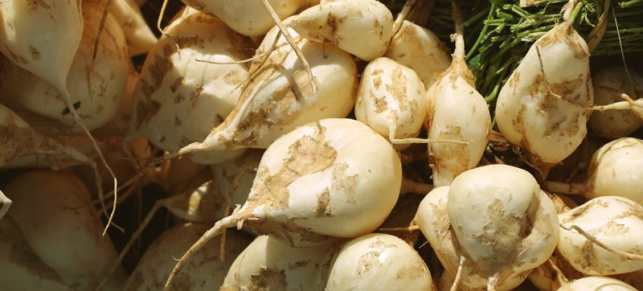
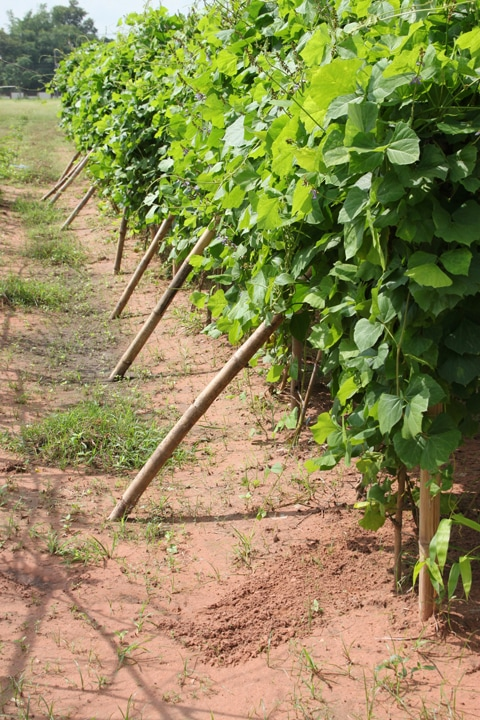
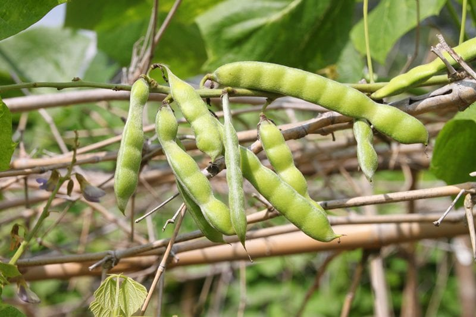
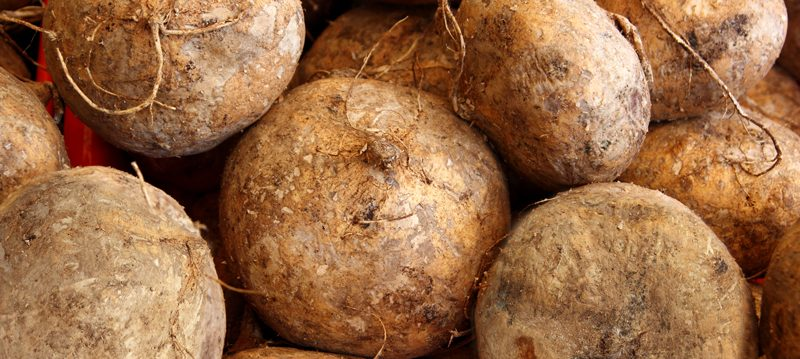

Jicama – A Root with Eleven Names
You know, I sometimes have to stop and share the gratitude that I have for falling into the raw, whole food diet. I had come to realize over the years that when I was eating a highly processed diet… I had no idea of all the wonderful whole foods that were out there. Let alone how in the heck they grew. I am now so much more in tune with the high vibrations that come from fresh, living foods. If you are ready to get your hands dirty, we can get busy and dig up some information on jicama.

Do you have a nickname for yourself? Or perhaps, someone else “gifted” you with one? I have three; Toots (my birth dad gave it to me, and it has been used since I was a toddler), Bob, my loving husband, calls me Angel, and lastly, my little sister came up with MeMe Soup (elegant way of saying Amie Sue lol). But jicama! Dang, it has many names. Jicama (pronounced he’-cama) has a variety of common names including climbing yam bean; Mexican potato; Mexican Water Chestnut; Mexican turnip; cây củ đậu (Vietnam); seng kuang (Malay); di gwa (Chinese); kuzuimo (Japan); sinkamas (Filipino); man kaeo (Thai); sankalu (Hindi).
A Root Disguised as a Vine

Jicama is a tropical plant that grows best in warm climates throughout Central America and USDA zones 7 through 10. Dratz, we are zone 5 here on Oldfather Farms so we won’t be growing jicama anytime soon. But thankfully, I can find them at our local grocery store.
Generally planted from seeds, jicama does best in warm climates with a medium amount of rain. It is sensitive to frost. If planted from seed, the roots require about five to nine months of growth before harvest.
When started from whole, small roots, only three months are needed to produce mature roots. Removal of the flowers has been shown to increase the yield of the jicama plant.
With sufficient support, the vines can climb 20-30 feet. If I were to stumble upon these vines, I would have been clueless that a root veggie is waiting for us down below. I love surprises like that.
The trifoliate leaves are opposite on the stem and can be up to 18 inches across. As a legume, this plant is capable of nitrogen fixation and therefore has low fertilizer requirements.
In time, a flower grows on the vine, waits to be pollinated, and soon after it will develop into a bean-like pod. Always remember that jicama is grown for the root/tuber, not for the beans.
These pods grow roughly 5-6 inches in length over a 2-3 month period turning dark brown or black as they reach maturity. When they have fully dried, the pods split open to release the seeds.
By this time, the vines have also started to dry and decline, and you can dig the edible root. Each vine produces a single, sometimes lobed, storage root, which varies in size and shape. Roots can become quite large, often weighing several pounds, but smaller ones are much more common. In just one acre of planted jicama, the yields are in the range of five to seven tons, now that’s a hefty amount of jicama!
A Toxic Reaction to make Note of
“Only the root portion of jicama is edible. The leaves, flowers, and vines of the plant contain rotenone, a natural insecticide designed to protect the plant from predators. Eating any of these parts of the plant can cause a toxic reaction. While the seed pods can sometimes be eaten when young, the mature pods are toxic. To be safe, it is best to only eat the root (underground) portion of the plant”. (1)

Harvesting
- Watching a plant or tree grow is thrilling for me, but harvesting? Watch out because sometimes I wiggle too much out of excitement when it comes to this part.
- The tubers can be harvested at four months for small tubers and nine months for large tubers.
- The tubers are unearthed from the ground using a trowel.
- It is best to wait until late fall, but before the first frost to dig your tubers. This will be approximately 150 days from the time of planting.
- If the vine shows signs of dying you will want to start digging a bit sooner.
- Be careful to avoid injuring the tubers during removal. Take your time and give thanks to each one that you unearth.
Uses of the Jicama
- Flavor partners. Jicamas have a flavor affinity for chili powder, cilantro, ginger, grilled fish, lemon, lime, oranges, red onion, salsa, sesame oil, and soy sauce.
- The sweet, juicy, crisp tubers are eaten raw or lightly cooked. To prepare, peel off the brown skin. The raw tubers taste like a cross between a water chestnut and an apple and do not discolor when cut.
- It is a great addition to salads and can be used as a crudité.
- It is also substituted for water chestnuts in a stir-fry.
- In Mexico, it is sliced thinly and sprinkled with salt, lemon juice, and chili sauce.
- As food, jicama is low in calories, only 45 calories for one cup of cubed root.

How to Select a Jicima
- Select well-formed, small to medium-size jicamas with smooth, unblemished skins.
- The skin should be thin and easily scratched with your thumbnail to reveal the creamy white flesh.
- Avoid thick-skinned jicamas or those that are cracked or bruised or shriveled.
- Large jicamas will be thick-skinned, fibrous, and dry.
- Don’t be afraid to ask your local produce specialist to help select one. They are usually willing to cut one in half as well.
Storing Jicama
- Jicamas, like potatoes, will keep in a cool, dry place uncovered for up to three weeks.
- Avoid exposure to moisture which will cause mold.
- Once cut or sliced, jicama should be wrapped in plastic and can be stored in the vegetable drawer of the refrigerator for up to one week.
Well, I am going to wrap this up for now. I hope you learned something because I sure did. Have a blessed day, amie sue
© AmieSue.com